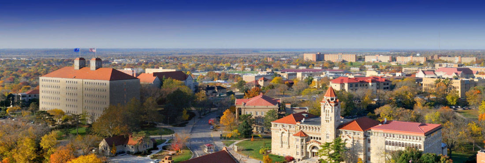
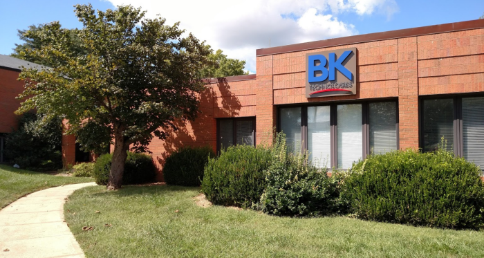
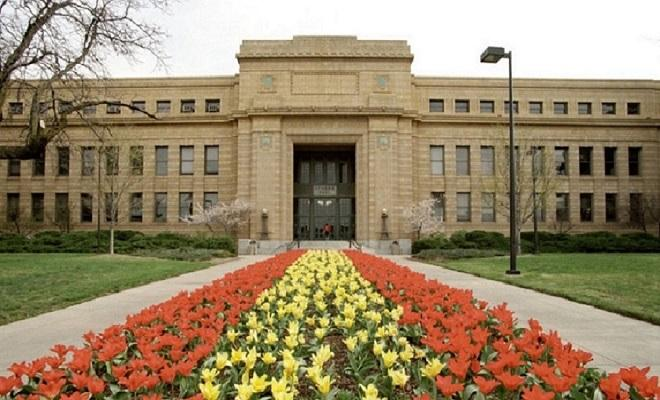
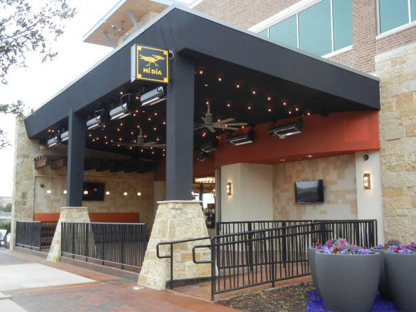
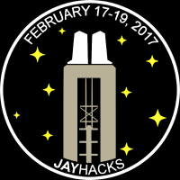
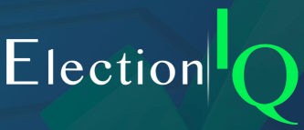
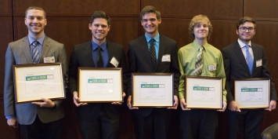
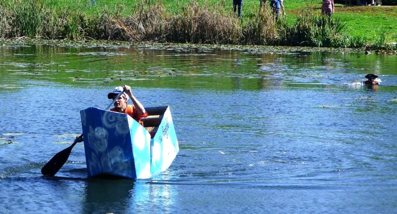
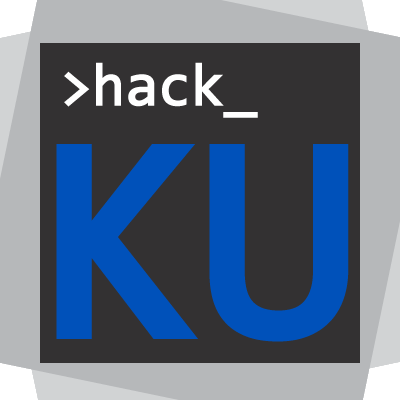
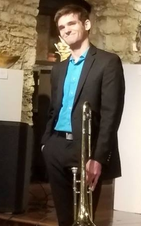

ABOUT ME
Objective
Education
Experience
Achievements
Leadership
Who Am I?
When I was in 5th grade, I created a dinosaur-themed, Candyland-esque board game
with my friend.
When I was in 8th grade, I dumped hours of my life into creating a detective game
satirizing film noir tropes using a program called RPG Maker.
When I was in the 9th grade, I hopped on the zombie craze and created a zombie
survival board game with a few buddies.
In the 12th grade, I started programming. Everything changed.
When I was around ten years old, my father started a business called
In2Innovation.
Their mission statement was to simplify the lives of users by doing product design
with an emphasis on user experience. Growing up, I always imagined myself becoming
a product designer and helping my dad create products. Going into my senior year,
my mother, a software engineer, urged me to take a programming class, and I begrudgingly
complied. My life changed from then on. I fell in love with the act of coding, and
became infatuated with the places this skill could take me. It was in this year that
I took a hard look at my life, at the plan I had laid out for myself, at the things
I was passionate about, and at the "just for fun" projects I had been doing all my
life. Through this, I discovered a new route for me, one that combined my newfound
love of programming with the distilled essence of why I wanted to work with my father.
I no longer wanted to create products that, through user experience, made peoples' lives
easier. I wanted to create experiences themselves.
I wanted to create experiences that made people learn, experiences that made people laugh,
experiences that made people feel. I began devoting my free time to learning about this
trade - I took on a film studies minor where I could study how movies like Die Hard
made me feel like a badass and how every single Pixar movie made me want to bawl my
eyes out. I began focusing more on video game development, as that was the best way
for me to deliver these experiences to people in a straightforward way. After a few
years of working on these skills, I am ready to put them to the test, and continue
to refine my craft. That is my mission, my goal. I know that if I work hard and smart
enough, one day I will be able to do this for my job, and that is what I am working towards.
Scroll to Top
Education
University of Kansas - Honors Program
Expected Graduation Date: May 2020Major - Computer ScienceMinor - Film & Media Studies
GPA: 3.98 / 4.00
Groups:
- Association for Computing Machinery
- Tau Beta Pi (Engineering Honors Society)
- KU Game Development Association
- Jazz Band
- Trombone Choir
Significant Classes:
- Video Game Theory & Design
- Data Structures
- Software Engineering
- Theory of Computation
Scroll to Top
Work Experience
BK Technologies - Software Intern
January 2018 - Present

BK Technologies
is a company that specializes in the development and manufacturing
of two-way radios for public safety uses. The products they develop
include portable, handheld two-way radios, mobile base stations,
and computer applications. Their headquarters are in Melbourne, Florida,
but their engineering office is located in Lawrence, Kansas - this
is where I've worked since January of 2018. During my time here, I've
worked on a variety of things, and have learned a lot.
A majority of my time at BK Technologies was spent working on their
computer applications. Working on these applications gave me extensive
practice in java (and a little bit of C#). One thing I enjoyed about
my internship here is that there was largely no hand-holding - if you
needed it, the full-timers loved to help, but by and large you were
expected to learn most things on your own. This gave me a "trial by fire"
way of learning the codebase, which I really appreciated. This gave
me great experience in learning how a large codebase functions from
the ground up - a skill that will no doubt be very useful in my future
ventures.
At BK, I was not only working on the computer applications,
I was also working on our autotesting software and radio development.
The autotesting software was created using Pytest, which was a fun
time for me, a guy that had not known Python before this internship.
Thanks to this, I now have a deeper understanding of Python and its
uses. The autotesting software also used a lot of advanced Python,
which was a great learning experience.
The final thing I contributed to at BK was the radio software. BK Technologies
is ultimately a radio company, and while the computer applications and
autotesting system were important, their radios are the reason the
company exists. I mostly worked on user interface and fixed bugs on the
software side, but I was also able to help work on the new technology
that is coming out. Much like the computer applications and autotest
system, the radio's infrastructure is quite large. Working on these three
different codebases gave a me fantastic experience in not only different
coding styles, but also different design patterns.
Overall, my time at BK Technologies has been very informative and
an invaluable learning experience. I not only obtained an insane amount
of knowledge when it comes to programming, but I also learned how the scrum
process model works in industry. The experience was a great one, and I
sincerely thank everyone who made it happen.
Kansas Algebra Program - Teaching Assistant / Tutor
August 2017 - December 2017

The Kansas Algebra
Program (or KAP) is a university-run organization that facilitates
MATH 002 (Intermediate Algebra) and MATH 101 (College Algebra) classes
for students. Not only do they offer the courses, they also have designated
testing and a help room where students can come and ask tutors questions
about the material. I worked at KAP for one whole semester, and that was
enough time to refine my teaching skills and practice my communication
skills.
At KAP, my official job title was Teaching Assistant, but that
doesn't quite explain what I did during my time there. While at KAP,
I was in charge of my very own MATH 101 (College Algebra) class with
about twenty-five students. I was tasked with preparing lectures,
grading homework, and being there for my students if they ever needed
help with any aspect of the class. The workload was immense but highly
rewarding - I taught the class three times a week for an hour,
and grading homework took roughly another four to six hours on top of that.
This was one of the reasons why I left KAP - the workload was just
a bit too much for a student who was in charge of a club, in a jazz band,
and was taking seventeen credit hours. That doesn't mean I didn't
enjoy it, though. Teaching gave me a great opportunity to practice
my communication skills, and preparing lessons allowed me to exercise
creativity to help students understand complicated topics.
Being a Teaching Assistant did not only include teaching a class,
but it also meant I was responsible for tutoring in the Help Room as
well. KAP's Help Room is a place where students can go to ask questions
and get help on the homework and material for the class. As a tutor,
I was responsible for knowing the material and being able to explain
said material in a logical way to students who were confused. The process
gave me valuable practice in explaining concepts to people who didn't
understand them, something that is very useful in the field of programming.
I ended up leaving KAP for two reasons:
- The workload was getting to be too much to handle.
- I got an offer to work at BK Technologies.
Mí Día from Scratch - Host
December 2015 - August 2017

Mí Día from Scratch
is a high-end mexican restuarant in the Dallas area, focusing on Santa
Fe, Tex-Mex, and classical Mexico City cuisines. I started working
at the Plano location right before they opened in 2016, and worked
there through my senior year of high school to my sophomore year of
college. I worked as a host, meaning I was in charge of choosing where
to seat guests, as well as performing various duties around the restuarant.
Being a host taught me a lot about communication and patience.
The restuarant was quite popular, especially during the
summer, and wait times would frequently reach up to two hours for a
table. Due to my position, I was responsible for telling guests how
long they should wait, and many times people were not happy about the
time I gave them. I would patiently listen to guests complaints about the wait
time and inform them I couldn't do anything about it. This patience was a skill
that would come in handy at my next job working as a college algebra
teacher and tutor.
Working at Mí Día was also a leadership opportunity.
Because I was a part of the original crew that helped open the restuarant,
I was given the role of teacher for many new hosts. This responsibility
was a great honor, and I did my best to make my managers proud.
When I moved to Kansas to pursue my college career, I did not entirely
quit Mí Día. Instead, I would work whenever I was back
home, whether it be for a short time (weekends) or a long time (school
breaks). From year and a half of working as a host, I learned plenty
of soft skills that would help me no matter where I went in life.
I learned how to effectively communicate with people who know nothing
about the industry, I learned how to teach others all aspects of a
complicated job, and I also learned how to manage my time well, and
make sure that things moved smoothly and effectively.
Scroll to Top
Achievements
KU Film & Media Studies Tensies Awards - Best New Media Project
November 2018
Over the span of my fall semester in 2018, I worked on a game called
Cannoneer.
Cannoneer was a project built for my Game Theory/Design class, and
my professor enhoyed it so much, he urged my teammate and I to submit
it to the KU FMS Tensies Awards (basically the University
of Kansas Film & Media Studies Department's version of The Oscars).
We did, and the project ended up being a huge hit! The judges raved
about the game (one got angry at us because he couldn't stop playing
for over an hour), and we ended up leaving the awards ceremony with
the prize for Best New Media Project! It was an insanely cool experience,
especially because we were able to make a speech when we received our award!
For more information on the project, you can click here
or just navigate to the page through the Projects tab.
Jayhacks Code-A-Thon - Second Place Team
February 2017

In February of 2017, I joined the inaugural Jayhacks hackathon (later
HackKU) to create a game with a small team - that game was
Terminal.
The game was an asychronous cooperative game where one player uses
a controller to play a platforming game, while the other player uses
the keyboard to type commands into a terminal, manipulating the world
the platformer played in. I go into much more detail about this game
in the Terminal page
on this website, so I would recommend checking that page for more
information.
At the end of the hackathon, Terminal's team ended up taking home
second place and a pair of Beats headphones! The experience and
success at this hackathon gave us the skills and confidence to continue
on with bigger and better projects in the future.
KC Federal Reserve Code-A-Thon - Grand Prize Winner
November 2016

In the November of 2016, with very little experience in programming,
I joined a team of five in the annual Kansas City Federal Reserve
Code-A-Thon. The team and I had 24 hours to create
ElectionIQ,
a web service that assisted people with the process of navigating
through the election cycle. The website could help the user register
to vote, learn who was on their ballot, and find out where they could
go to cast their vote. The website utilized Google's
Civic Information API
to get the relevant information to the site.
The reason why this isn't on my Projects page on this website is because
I didn't do much programming here. I did a little bit on the bug-fixing
side of things but overall I didn't contribute much to the codebase.
However, that does not mean I didn't do anything. Instead of coding,
I worked on all the promotional material for ElectionIQ, including
the video:
 At the end of the competition, we were selected to be one of three finalists who got to go to Kansas City and present their projects in front of a room full of executives from the KC Federal Reserve. This was a great opportunity to work on my public speaking and network. Thanks to our application, media, and presentations, our team left the code-a-thon with first place! The experience gave me a glimpse into something I would be doing a lot in the future: working on a team. It also gave me a goal: next time I joined a hackathon, I would do more programming. And at the Jayhacks Code-A-Thon, that's exactly what I did.
KU Cardboard Boat Regatta - First Place Sailor
October 2016

This is probably my greatest accomplishment.
In October of my freshman year of college, I joined a few of my friends
in the creation of a cardboard boat to race in the now annual KU Cardboard
Boat Regatta. Over the course of a month, we designed and built a
functioning boat out of nothing but cardboard, duct tape, and paint.
Once the project was complete, I was in charge of sailing the boat,
named The Reginald after a bug that was found inside. I sailed
the boat to victory, garnering us the first place prize and a place
in the Lawrence Journal-World.
Jokes aside, the competition was a great learning experience. This
was my first experience of crunch time, which is something I am now
very familiar with. I also learned that cardboard boats are surprisingly
expensive, information that has been extremely valuable in my day-to-day
life.
Scroll to Top
Leadership
ACM - Webmaster
August 2018 - Present
Due to the recent nature of this leadership role, not much has been
done. However, I am in charge of leading a small team of freshmen and
sophomores in the creation of a website for the Association for Computing
Machinery club at KU. I act as a sort of moderator, guiding the younger
students in the right direction as they create the website. I also
teach the basics of HTML, CSS, and Javascript in this role.
Once the website is up and functional, a link will be provided here.
HackKU - Events Chair / Videographer
October 2017 - June 2018

For last year's weekend-long hackathon,
HackKU, I was not a participant
but in fact, an organizer. I functioned as HackKU's Events Chair,
meaning that I was responsible for coordinating events and talks for
participants to attend. This was a fun adventure, as I not only got
to exercise my creativity in coming up with possible events to entertain
competitors, but I also got to communicate with industry professionals
in helping them set up talks.
This was all done before the hackathon, but during the hackathon I
had a different role. During the hackathon, I was in charge of making
sure events went smoothly, that all talks were on-schedule and well-attended.
I was also the on-campus liaison for the event sponsors, meaning that
if someone needed something, they came to me. This gave me an opportunity
to communicate and create friendships with the higher-ups in certain
companies. In addition to all of this, I was in charge of preparing
and delivering the opening speech.
Events were not the only thing I was in charge of - I was also in charge
of capturing the moment. With the assistance of a close friend,
we created a promotional video for the hackathon that included videos
of competitors programming; people partaking in the festivies; and
interviews from the organizers, volunteers, and sponsors. Check out
the fruits of our labor here:
ACM - Programming Club Co-Chair
August 2017 - May 2018
Jazz Band - Lead Trombone
August 2016 - Present

I am not just a soulless programmer, destined to spend my life hunched
over a computer screen, never being able to talk to people in person.
I also play trombone! I've been in a jazz band since I was in seventh
grade, and when I came to the University of Kansas I didn't let my
hectic academic schedule interfere with what I love. I have been and
am currently the lead trombone in the University of Kansas's prestigious
Jazz Ensemble II. Not only does this mean that I get to play the high
notes, but it also means that I am generally the leader of the trombone
section.
I love jazz band because it is a fantastic creative outlet. Above all,
improvisation is the best part of jazz band. Improvisation combines
the creative thought process of What will sound good? with the technical thought
process of What notes are in the chords? It sounds so cliché, but improv
truly gives me an unobstructed outlet to express myself through. I
believe that it is the purest form of music - the melody being played
is only slightly influenced by the music behind it; the melody comes
directly from the performer's heart. And yes, I realize how pretentious
that may sound, but it's the reason that I continue to play. The
ability to make music that you come up with is a privilege,
and I am so lucky to be able to use it.
Scroll to Top